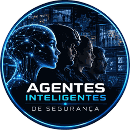

Harness MEDIR · segurança eletrônica · v0.2
São 2h47. O alerta chegou. Quem decide?
Um guia prático e aberto para colocar IA dentro de uma central de monitoramento sem entregar a decisão à máquina. O modelo aponta. O protocolo decide. O operador confirma.
Derivado do harness MEDIR, de Teco Sodré: github.com/tecosodreaboutdigital/harness-medir (série completa em tecosodreaboutdigital.github.io/harness-medir).
Invasão de perímetro · confiança do modelo 71%
Chuva fina · 1 operador no turno · 38 alertas na última hora
hipótese, não prova
A cena
Madrugada na central. Um operador sozinho, o café já frio, um mosaico de câmeras e uma fila de alertas que não para. Às 2h47 chega mais um, o 39º da última hora. O analítico diz 71% de confiança. Chove fino, e a chuva já disparou alarmes falsos nessa mesma câmera na semana passada.
Agora coloque um assistente de IA na cadeira ao lado. Ele pode ajudar muito: dizer o que mudou na cena, lembrar o protocolo, sugerir o que olhar primeiro. Ou pode piorar tudo: devolver um texto longo e seguro de si, recomendar acionar a polícia por causa de uma sombra, ou deixar uma câmera caída parecer uma noite tranquila.
A diferença entre um e outro não está no modelo. Está no que fica em volta dele.
Agente = modelo + harness
O modelo é o que vê e escreve. O harness é todo o resto: o contexto que ele recebe, as regras que segue, quem decide em cada etapa, o que é medido e o que muda depois de um erro. Todo mundo tem acesso aos mesmos modelos. O harness é seu, e é a parte que ninguém vende pronta.
Três regras resumem o resto do site:
- Todo alerta é uma hipótese, nunca uma prova. O algoritmo aponta, o protocolo decide.
- O operador confirma. Ação difícil de desfazer passa por gente, sempre, e confirmar significa olhar o vídeo, não clicar em "ok".
- Sem verificação não existe autonomia responsável. Se ninguém consegue conferir o alerta, nada é delegado.
O ciclo MEDIR
Cinco passos: Mapear, Equipar, Delegar, Inspecionar, Reforçar. As iniciais formam o verbo que dá nome ao método, de propósito: o harness existe para medir como a IA se comporta na sua operação e para mudar o ambiente quando ela erra.
- M · passo 1MapearQue tarefa, com que risco? Uma câmera, um evento, uma decisão. Daqui sai o nível de controle.
- E · passo 2EquiparO que o modelo precisa saber e poder fazer? Papel, protocolo, resposta curta, ferramentas mínimas.
- D · passo 3DelegarQuanto ele pode fazer sozinho? Autonomia declarada por caso de uso, nunca por fornecedor.
- I · passo 4InspecionarComo sabemos que está funcionando? Sensores que produzem evidência, não opinião.
- R · passo 5ReforçarO que muda depois de um erro? Cada erro vira mudança permanente, com data e versão.
O harness precisa ser menor que a superfície de falha que ele controla. Um processo de aprovação que dá mais trabalho que o próprio risco não sobrevive ao primeiro plantão.
Nível de controle
O nível de controle diz quanto a IA pode fazer sozinha num caso de uso. Ele é decidido pelo custo do erro, não pela confiança no fornecedor nem pela taxa de acerto do folheto.
N mais alto significa mais controle humano, não mais liberdade para a máquina. Em N3 a IA continua só apontando. O que cresce é o número de pessoas e de registros entre o alerta e a ação.
- N1a IA age sozinha, sempre com registro
- N2a IA recomenda, o operador confirma
- N3o operador confirma no vídeo e outra pessoa autoriza
menos controle humanomais controle humano
Aplique em ordem, de cima para baixo. A primeira linha verdadeira define o nível, e as linhas de baixo não o reduzem.
| Se... | Nível | Quem decide |
|---|---|---|
| quando o alerta dispara, alguém age no mundo real de um jeito difícil de desfazer (abordar, acionar a polícia, bloquear acesso, parar a operação) | N3 | A IA aponta. O operador confirma no vídeo e outra pessoa autoriza a ação. |
| o sistema lê ou grava em sistema de outra empresa ou do cliente, ou o evento passa de 100 por mês, ou a ação tem efeito fora da central | N2 | A IA aponta e recomenda. O operador confirma antes de agir. |
| a ação é interna, fácil de desfazer e sem integração com terceiros | N1 | A IA pode agir sozinha (marcar o vídeo, abrir chamado), sempre com registro. |
Se não existe jeito de conferir se o alerta estava certo (segundo sensor, vídeo gravado, conferência em campo), o caso está em Trava. A Trava passa por cima de qualquer linha da tabela: nada é delegado, nem a ação mais inocente, até a verificação existir. Quando ela existir, o caso volta ao nível que a tabela definiu.
Registre sempre o nível e a linha que o definiu: quem revisar o caso depois precisa saber se ele veio da ação, da integração ou do volume. A tabela completa, as quatro perguntas e a matriz de ações estão em Modelos.
Comece em 15 minutos
Escolha uma câmera real da sua operação. Não precisa instalar nada.
- Minutos 0 a 3, Mapear. Escreva em uma frase: câmera, evento, decisão. Responda as quatro perguntas e anote o nível e a linha que o definiu.
- Minutos 3 a 6, contrato. Preencha o contrato de tarefa. O que você não souber responder é a sua lista de pendências.
- Minutos 6 a 11, Equipar. Rode lado a lado o prompt A e o prompt B com um alerta fictício. Qual resposta você entrega ao seu operador às 3 da manhã?
- Minutos 11 a 14, antes de ligar. Passe o checklist de dez itens. Todo "não" vira pendência com dono.
- Minuto 15, Inspecionar. Escolha dois sensores para medir a partir de amanhã. Falsos positivos a cada mil alertas e alertas por operador por hora formam um bom par inicial.
O que tem aqui
- ModelosCinco páginas para copiarContrato de tarefa, nível de controle, prompt com harness, checklist antes de ligar e sensores.
- SkillsSete skills para agentesMapear câmera, triagem de alerta, revisão de nível, integrações somente leitura e um desenho de servidor MCP.
- CasosQuatro casos por setorIndústria, terminal de granéis, sites remotos de energia e grandes eventos, sempre anonimizados.
- ComunidadeComo contribuirUm caso, um erro que virou regra, um sensor ou uma skill, por issue ou pull request.
Comunidade A.I.S.

A.I.S. 🚀 Agentes de IA = Modelo + Harness para Segurança Eletrônica, Monitoramento e Produtividade
Uma comunidade no WhatsApp sobre este tema, para quem opera, regula, audita ou constrói soluções digitais inteligentes. É lá que aparecem os casos, as dúvidas e os erros que depois viram regra neste repositório.
Este projeto nasceu na Oficina Prática de IA na Segurança, apresentada por Teco Sodré na SegSummit 2026, e cresce com a comunidade A.I.S. e com o que acontece nas operações de quem participa. No grupo e no repositório vale a mesma regra: nenhum nome de cliente, cidade, órgão público, fornecedor, preço ou pessoa. Os exemplos são sempre de setor: indústria, terminal de granéis, sites remotos de energia, grandes eventos, varejo, condomínio.
O método vem do harness MEDIR, a série de Teco Sodré sobre engenharia de harness. Aqui ele foi adaptado ao CFTV, ao monitoramento e à segurança eletrônica, com uma regra a mais, a Trava, porque na segurança o custo de um alerta que ninguém confere recai sobre uma pessoa abordada, um acesso bloqueado ou uma operação parada.